Fassade zeichnen, Teile zählen
Wandlänge und Höhe eingeben: Rustio zählt Rahmen, Beläge, Geländer, Diagonalen und Anker. Mit Lagerabgleich und Ladeliste nach Gewicht. Ohne Konto.
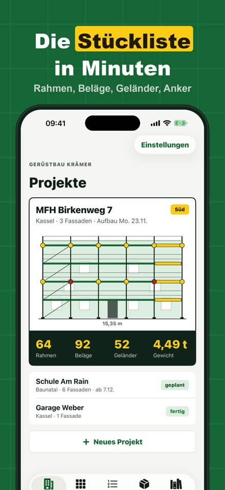
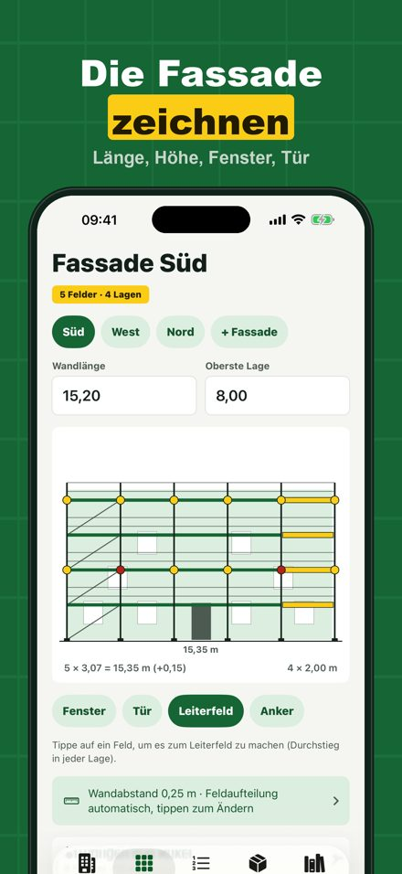
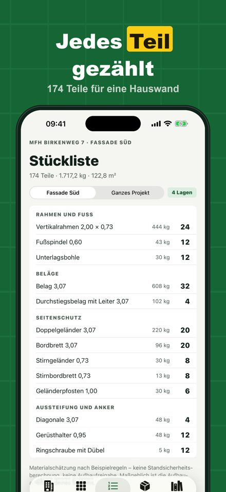
Rustio macht aus einer Hauswand die Materialliste fürs Fassadengerüst. Du gibst Wandlänge und Höhe der obersten Lage ein, zeichnest Fenster, Tür und Leiterfeld ein, und Rustio teilt die Wand in Felder von 3,07 und 2,57 m und Lagen von 2 m. Daraus zählt es Rahmen, Beläge, Geländer, Bordbretter, Diagonalen, Anker und Fußspindeln. Mehrere Fassaden ergeben das Projekt, der Abgleich mit deinem Lager zeigt die Fehlteile, die Ladeliste plant die Fahrten nach Gewicht.
Ohne Abo: 1 Projekt mit einer Fassade, Stückliste auf dem Bildschirm. Rustio Plus ist ein Monats- oder Jahresabo: unbegrenzt Projekte und Fassaden, Stückliste und Ladeliste als PDF, eigener Teilekatalog mit Lagerbestand und Fehlteilen, Projektdatei teilen. Verlängert sich automatisch, jederzeit in den Apple-ID-Einstellungen kündbar. Keine Werbung, kein Konto.
Rustio ist ein unabhängiges Werkzeug ohne Verbindung zu Gerüstherstellern oder Verbänden. Die Stückliste ist eine Materialschätzung nach allgemeinen Beispielregeln, keine Standsicherheitsberechnung und keine Aufbaufreigabe. Maßgeblich sind die Aufbau- und Verwendungsanleitung deines Systems und die befähigte Person.
Gevel tekenen, delen tellen
Voer lengte en hoogte in: Rustio telt frames, vloeren, leuningen, diagonalen en ankers. Met voorraadcheck en laadlijst op gewicht. Zonder account.
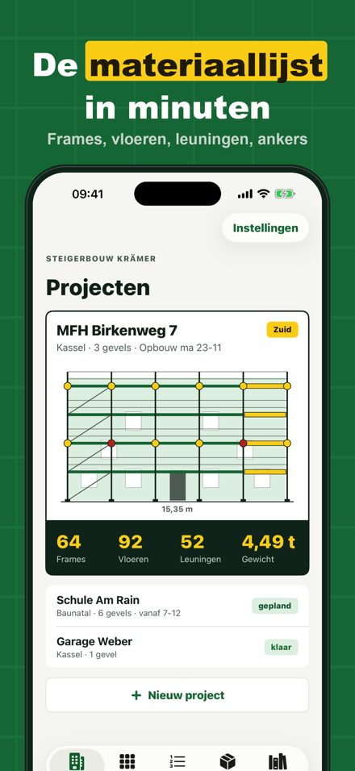
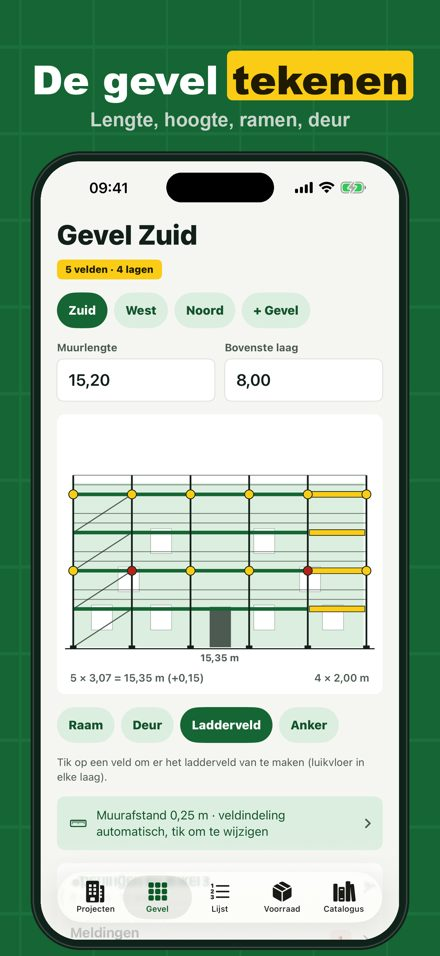
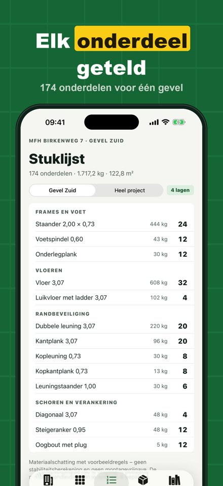
Rustio maakt van een gevel de materiaallijst voor de gevelsteiger. Je voert de lengte van de muur en de hoogte van de bovenste werkvloer in, tekent ramen, deur en ladderveld, en Rustio verdeelt de gevel in velden van 3,07 en 2,57 m en lagen van 2 m. Daaruit telt het frames, vloeren, leuningen, kantplanken, diagonalen, ankers en voetspindels. Meerdere gevels vormen het project, de vergelijking met je voorraad toont wat ontbreekt en de laadlijst plant de ritten op gewicht.
Zonder abonnement: 1 project met één gevel, materiaallijst op het scherm. Rustio Plus is een maand- of jaarabonnement: onbeperkt projecten en gevels, materiaallijst en laadlijst als pdf, eigen catalogus met voorraad en tekorten, projectbestand delen. Verlengt automatisch, altijd opzegbaar in de instellingen van je Apple ID. Geen reclame, geen account.
Rustio is een onafhankelijk hulpmiddel zonder band met steigerfabrikanten of brancheorganisaties. De lijst is een materiaalschatting volgens algemene voorbeeldregels, geen sterkteberekening en geen vrijgave van de opbouw. Bepalend zijn de montagehandleiding van je systeem en de deskundige ter plaatse.
Rysuj elewację, licz elementy
Podaj długość i wysokość: Rustio liczy ramy, pomosty, poręcze, stężenia i kotwy. Ze stanem magazynu i listą załadunku według wagi. Bez konta.
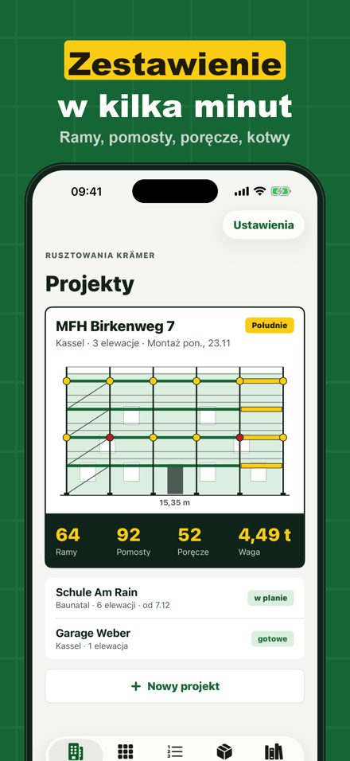
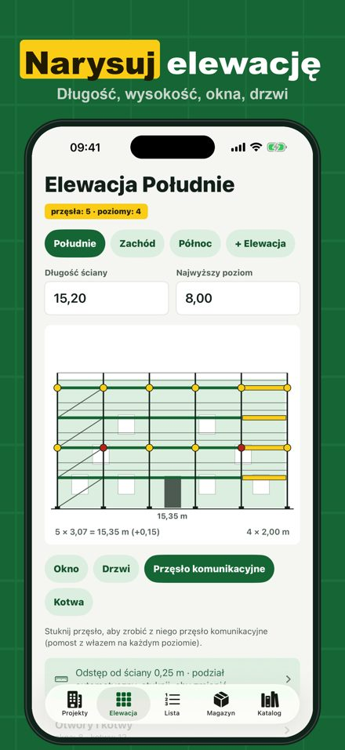
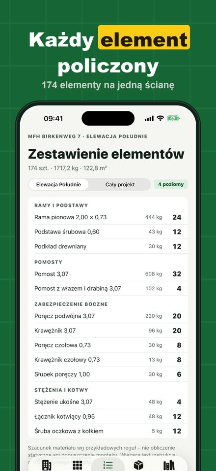
Rustio zamienia ścianę budynku w zestawienie materiału na rusztowanie elewacyjne. Wpisujesz długość ściany i wysokość najwyższego pomostu, rysujesz okna, drzwi i pole z drabiną, a Rustio dzieli ścianę na przęsła 3,07 i 2,57 m oraz poziomy po 2 m. Na tej podstawie liczy ramy, pomosty, poręcze, krawężniki, stężenia, kotwy i podstawy śrubowe. Kilka elewacji tworzy projekt, porównanie z magazynem pokazuje braki, a lista załadunku planuje kursy według wagi.
Bez subskrypcji: 1 projekt z jedną elewacją, zestawienie na ekranie. Rustio Plus to subskrypcja miesięczna lub roczna: bez limitu projektów i elewacji, zestawienie i lista załadunku w PDF, własny katalog ze stanem magazynu i brakami, udostępnianie pliku projektu. Odnawia się automatycznie, anulujesz w ustawieniach Apple ID. Bez reklam i konta.
Rustio to niezależne narzędzie, niezwiązane z producentami rusztowań ani organizacjami branżowymi. Zestawienie jest szacunkiem materiału według ogólnych przykładowych reguł, nie obliczeniem statycznym ani dopuszczeniem montażu. Wiążąca jest instrukcja montażu i użytkowania twojego systemu oraz osoba uprawniona na miejscu.
Dessinez, comptez les pièces
Saisissez longueur et hauteur : Rustio compte cadres, planchers, garde-corps, diagonales et ancrages. Avec stock et liste de chargement par poids. Sans compte.
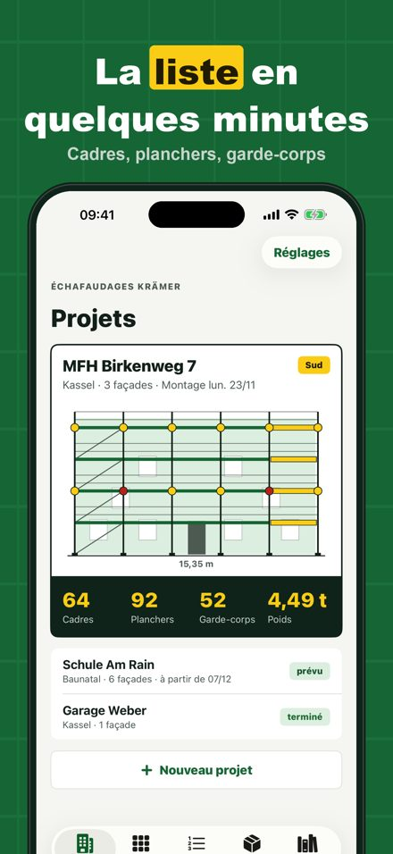
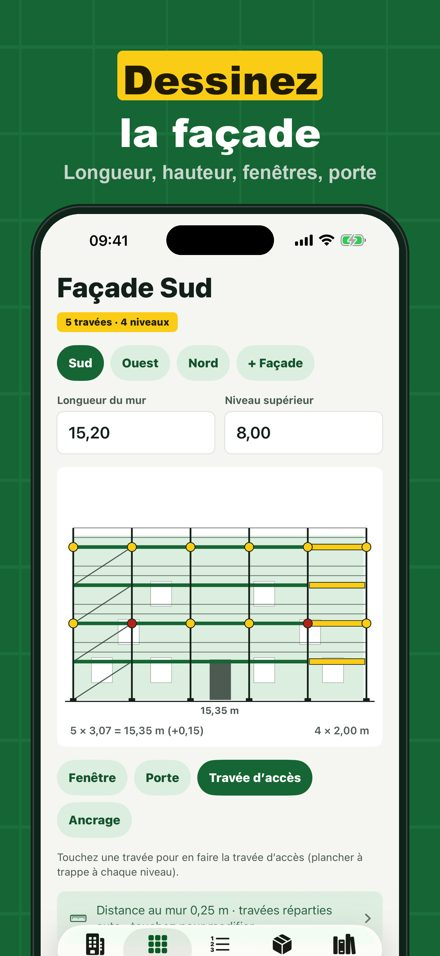
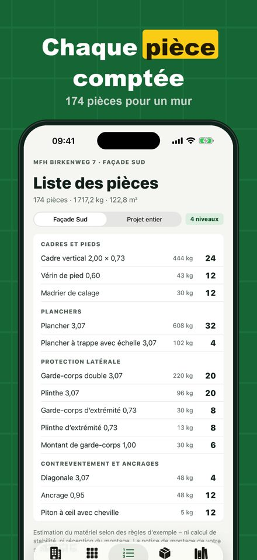
Rustio transforme un mur en liste de matériel pour l’échafaudage de façade. Vous saisissez la longueur du mur et la hauteur du plancher le plus haut, dessinez fenêtres, porte et travée d’accès, et Rustio découpe la façade en travées de 3,07 et 2,57 m et en niveaux de 2 m. Il compte ensuite cadres, planchers, garde-corps, plinthes, diagonales, ancrages et vérins. Plusieurs façades forment le chantier, la comparaison avec votre stock montre les manquants et la liste de chargement planifie les trajets par poids.
Sans abonnement : 1 chantier avec une façade, liste à l’écran. Rustio Plus est un abonnement mensuel ou annuel : chantiers et façades illimités, listes de matériel et de chargement en PDF, catalogue personnel avec stock et manquants, partage du fichier de chantier. Renouvellement automatique, résiliable à tout moment dans les réglages de l’identifiant Apple. Sans publicité, sans compte.
Rustio est un outil indépendant, sans lien avec des fabricants d’échafaudages ou des organisations professionnelles. La liste est une estimation de matériel selon des règles d’exemple générales, pas une note de calcul ni une réception du montage. La notice de montage de votre système et la personne compétente font foi.
Tegn fasaden, tell delene
Skriv inn lengde og høyde: Rustio teller rammer, plank, rekkverk, diagonaler og forankring. Med lagersjekk og lasteliste etter vekt. Uten konto.
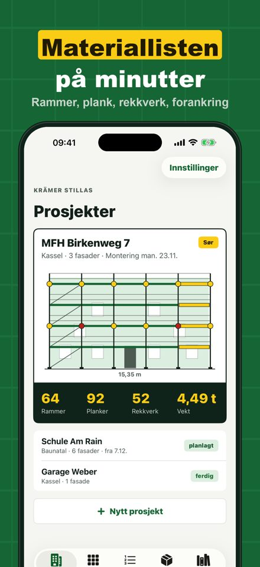
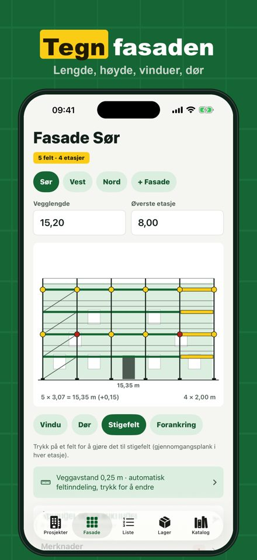
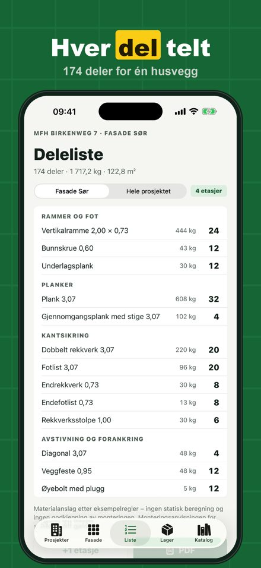
Rustio gjør en husvegg om til materiallisten for fasadestillaset. Du skriver inn veggens lengde og høyden på øverste arbeidsplattform, tegner vinduer, dør og stigefelt, og Rustio deler fasaden i felt på 3,07 og 2,57 m og etasjer på 2 m. Ut fra dette teller den rammer, plank, rekkverk, fotlister, diagonaler, forankring og bunnskruer. Flere fasader blir et prosjekt, sammenligningen med lageret viser hva som mangler, og lastelisten planlegger turene etter vekt.
Uten abonnement: 1 prosjekt med én fasade, listen på skjermen. Rustio Plus er et måneds- eller årsabonnement: ubegrenset prosjekter og fasader, materialliste og lasteliste som PDF, egen katalog med lager og mangler, deling av prosjektfil. Fornyes automatisk, kan sies opp når som helst i innstillingene for Apple-ID. Ingen reklame, ingen konto.
Rustio er et uavhengig verktøy uten tilknytning til stillasprodusenter eller bransjeorganisasjoner. Listen er et materialanslag etter generelle eksempelregler, ikke en statisk beregning og ikke en godkjenning av monteringen. Monteringsanvisningen for systemet ditt og den kompetente personen på stedet gjelder.
Rita fasaden, räkna delarna
Ange längd och höjd: Rustio räknar ramar, plank, räcken, diagonaler och förankringar. Med lagerkoll och lastlista efter vikt. Utan konto.
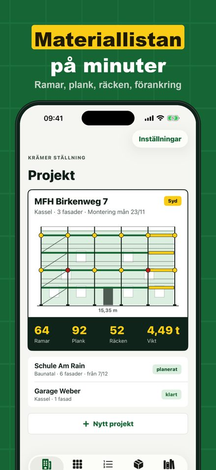
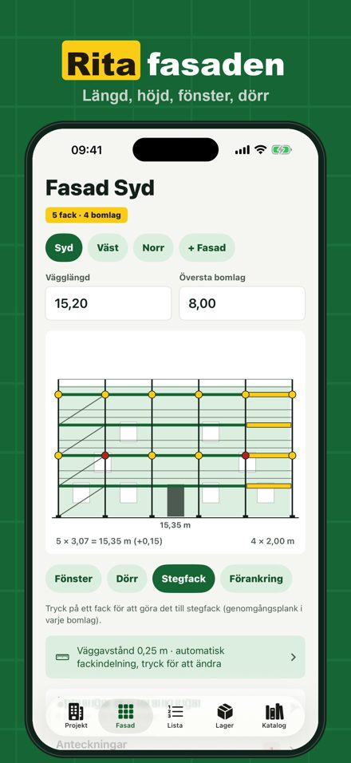
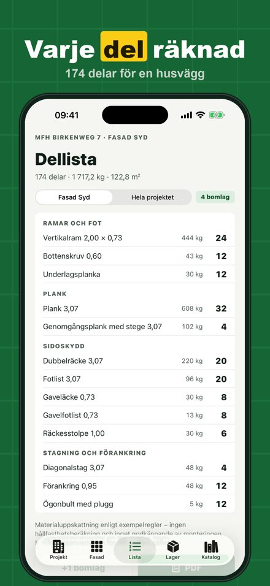
Rustio gör en husvägg till materiallistan för fasadställningen. Du anger väggens längd och höjden på översta arbetsplanet, ritar in fönster, dörr och stegfack, och Rustio delar fasaden i fack på 3,07 och 2,57 m och bomlag på 2 m. Utifrån det räknar den ramar, plank, räcken, fotlister, diagonaler, förankringar och bottenskruvar. Flera fasader blir ett projekt, jämförelsen med lagret visar vad som saknas och lastlistan planerar turerna efter vikt.
Utan abonnemang: 1 projekt med en fasad, listan på skärmen. Rustio Plus är ett månads- eller årsabonnemang: obegränsat med projekt och fasader, materiallista och lastlista som PDF, egen katalog med lager och brister, dela projektfil. Förnyas automatiskt, säg upp när som helst i inställningarna för Apple-ID. Ingen reklam, inget konto.
Rustio är ett oberoende verktyg utan koppling till ställningstillverkare eller branschorganisationer. Listan är en materialuppskattning enligt allmänna exempelregler, inte en hållfasthetsberäkning och inget godkännande av monteringen. Monteringsanvisningen för ditt system och den kompetenta personen på plats gäller.